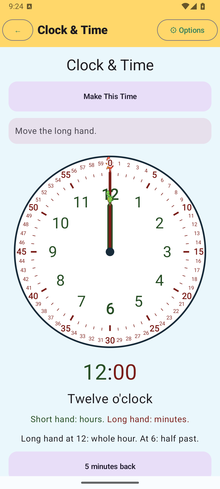
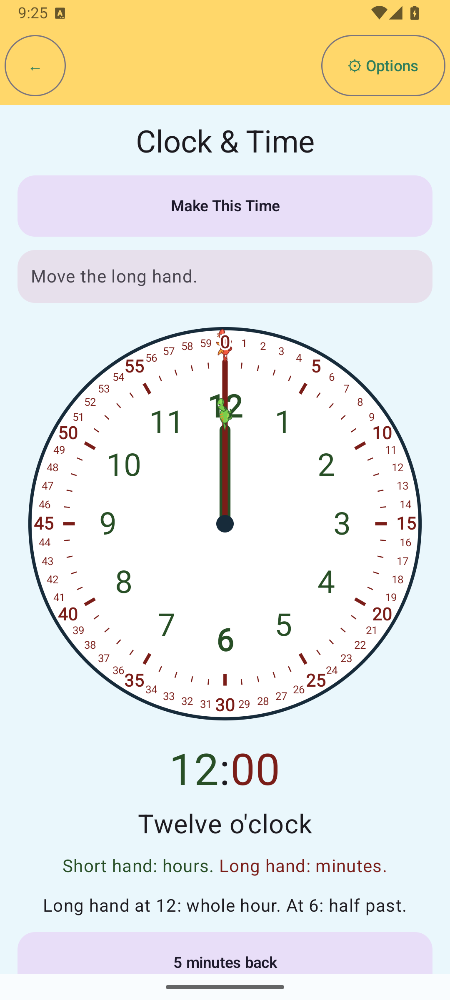
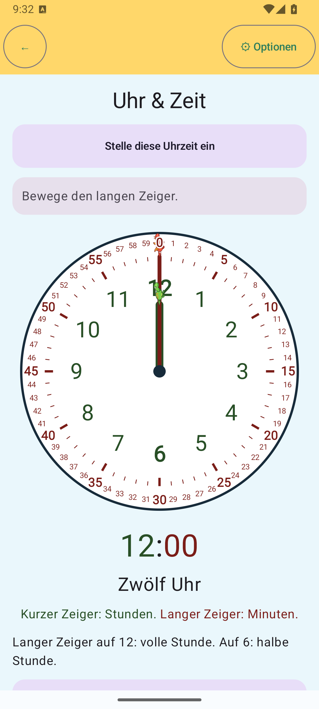
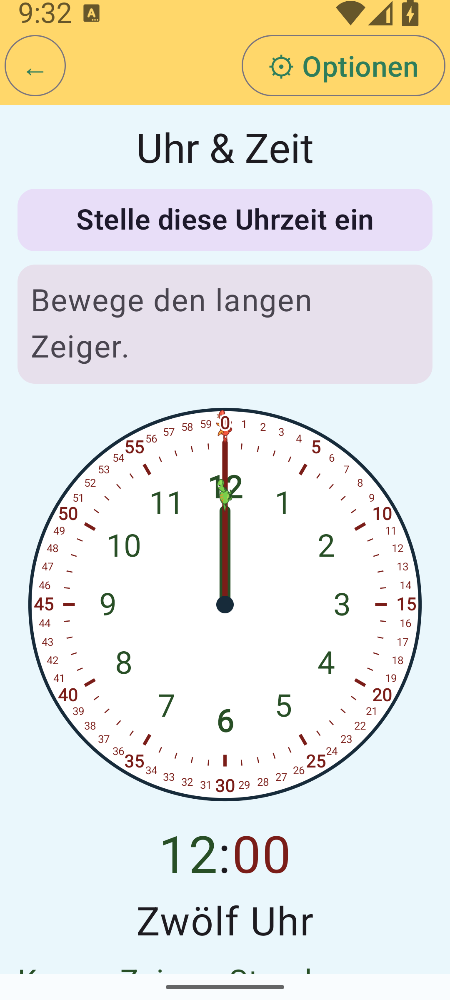
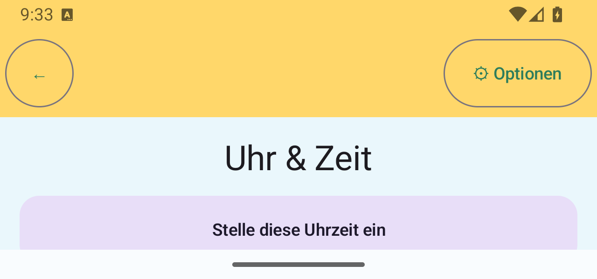
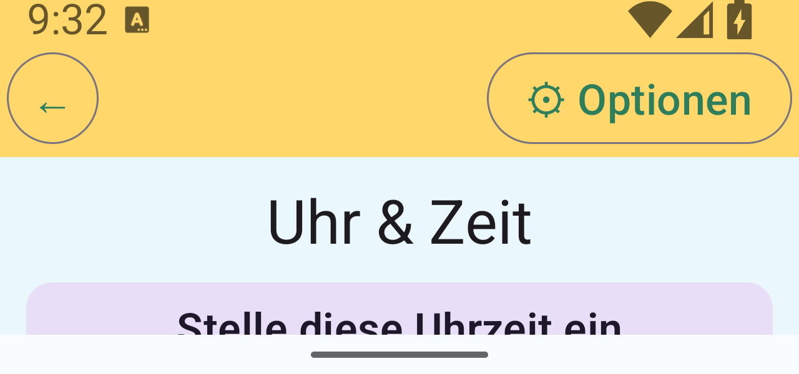

Production Clock Explore captures from API 35. The baseline and revised builds
use the same route, language, phone display and canonical clock artwork.
Before / after — English phone

Baseline: duplicate title; shell Back target is narrow.

Phase 4E: one body heading; shell controls meet the 56dp minimum.
German phone and large text

German — phone portrait, Options returns to the Clock route.

German — 2× system text, phone portrait.
Responsive layouts

German — 1280×600 short landscape, 1× text.

German — 1280×600 short landscape, 2× text. Wheel remains scroll-reachable.